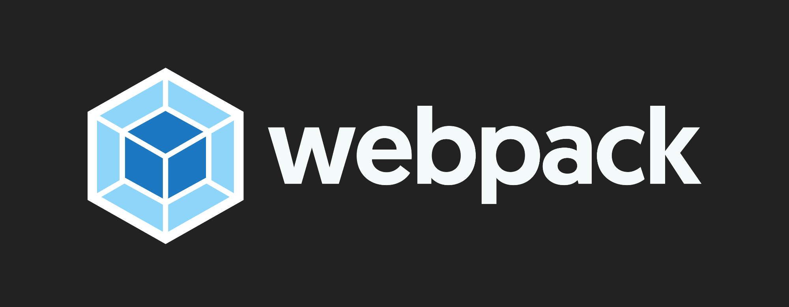
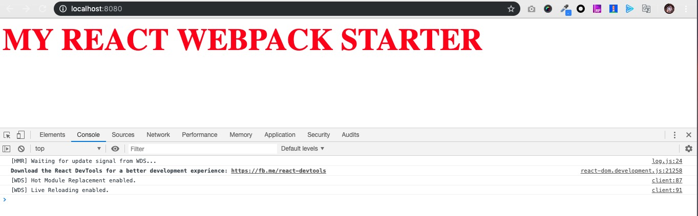

摘要： webpack入门教程。
Fundebug经授权转载，版权归原作者所有。

Webpack已经流行好久了，但很多同学使用webpack时还是一头雾水，一下看到那么多文档、各种配置、各种loader、plugin立马就晕头转向了。我也不例外，以至于很长一段时间对webpack都是一知半解的状态。但是想要继续做好前端，webpack是必须得跨过的一道坎，其实掌握webpack并不难，只是我们没有找到正确的方法。本文就是我自己在学习webpack时的一点心得体会，供大家参考。
一句话概括：webpack是一个模块打包工具（module bundler）。重点在于两个关键词“模块”和“打包”。什么是模块呢？我们回顾一下曾经的前端开发方式，js文件通过script标签静态引入，js文件之间由于没有强依赖关系，如果文件1要用到文件2的某些方法或变量，则必须将文件1放到文件2后面加载。随着项目的增大，js文件之间的依赖关系越发错综复杂，维护难度也越来越高。这样的困境驱使着前端工程师们不断探索新的开发模式，从后端、app的开发模式中我们获得灵感，为什么不能引入“模块”的概念让js文件之间可以相互引用呢？模块1要使用模块2的功能，只需要在该模块1中明确引用模块2就行了，而不用担心它们的排列顺序。基于这种理念，CommonJS和 AMD规范被创造了出来，然后有了require.js、system.js这样的前端模块加载工具和node的模块系统，直到现在流行的es6 module。
模块的引入解决了文件之间依赖引用的问题，而打包则解决了文件过多的问题。当项目规模增大，模块的数量数以千计，浏览器如果要加载如此多的文件，页面加载的速度势必会受影响，而bundler可以把多个关联的文件打包到一起从而大量减少文件的数量提高网页加载性能。提供模块化的开发方式和编译打包功能就是webpack的核心，其他很多功能都围绕它们展开。
对于webpack，模块不仅仅是javascript模块，它包括了任何类型的源文件，不管是图片、字体、json文件都是一个个模块。Webpack支持以下的方式引用模块：
import 方法require() 方法define 和 require 语法url(...) 和 <img src=...> 中的图片路径所谓的依赖关系图是webpack根据每个模块之间的依赖关系递归生成的一张内部逻辑图，有了这张依赖关系图，webpack就能按图索骥把所有需要模块打包成一个bundle文件了。
绘制依赖关系图的起始文件被称为entry。默认的entry为 ./src/index.js，或者我们可以在配置文件中配置。entry可以为一个也可以为多个。
单个entry：
module.exports = {
entry: './src/index.js'
}或者
module.exports = {
entry: {
main: './src/index.js'
}
};多个entry，一个chunk
我们也可以指定多个独立的文件为entry，但将它们打包到一个chunk中，此种方法被称为 multi-main entry，我们需要传入文件路径的数组：
module.exports = {
entry: ['./src/index.js', './src/index2.js', './src/index3.js']
}但是改种方法的灵活性和扩展性有限，因此并不推荐使用。
多个entry，多个chunk
如果有多个entry，并且每个entry生成对应的chunk，我们需要传入object：
module.exports = {
entry: {
app: './src/app.js',
admin: './src/admin.js'
}
};这种写法有最好的灵活性和扩展性，支持和其他的局部配置（partial configuration）进行合并。比如将开发环境和生产的配置分离，并抽离出公共的配置，在不同的环境下运行时再将环境配置和公共配置进行合并。
有了入口，对应的就有出口。顾名思义，出口就是webpack打包完成的输出，output定义了输出的路径和文件名称。Webpack的默认的输出路径为 ./dist/main.js。同样，我们可以在配置文件中配置output：
module.exports = {
entry: './src/index.js',
output: {
path: __dirname + '/dist',
filename: 'bundle.js'
}
};多个entry的情况
当有多个entry的时候，一个entry应该对应一个output，此时输出的文件名需要使用替换符（substitutions）声明以确保文件名的唯一性，例如使用入口模块的名称：
module.exports = {
entry: {
app: './src/app.js',
search: './src/search.js'
},
output: {
filename: '[name].js',
path: __dirname + '/dist'
}
}最终在 ./dist 路径下面会生成 app.js和search.js两个bundle文件。
Webpack自身只支持加载js和json模块，而webpack的理念是让所有的文件都能被引用和加载并生成依赖关系图，所以loader出场了。Loader能让webpack能够去处理其他类型的文件（比如图片、字体文件、xml）。我们可以在配置文件中这样定义一个loader：
webpack.config.js
module.exports = {
module: {
rules: [
{
test: /\.txt$/,
use: 'raw-loader'
}
]
}
};其中test定义了需要被转化的文件或者文件类型，use定义了对该文件进行转化的loader的类型。该条配置相当于告诉webpack当遇到一个txt文件的引用时（使用require或者import进行引用），先用raw-loader转换一下该文件再把它打包进bundle。
还有其他各种类型的loader，比如加载css文件的css-loader，加载图片和字体文件的file-loader，加载html文件的html-loader，将最新JS语法转换成ES5的babel-loader等等。完整列表请参考 webpack loaders。
Plugin和loader是两个比较混淆和模糊的概念。Loader是用来转换和加载特定类型的文件，所以loader的执行层面是单个的源文件。而plugin可以实现的功能更强大，plugin可以监听webpack处理过程中的关键事件，深度集成进webpack的编译器，可以说plugin的执行层面是整个构建过程。Plugin系统是构成webpack的主干，webpack自身也基于plugin系统搭建，webpack有丰富的内置插件和外部插件，并且允许用户自定义插件。官方列出的插件有 这些。
与loader不同，使用plugin我们必须先引用该插件，例如：
const webpack = require('webpack'); // 用于引用webpack内置插件
const HtmlWebpackPlugin = require('html-webpack-plugin'); // 外部插件
module.exports = {
plugins: [
new webpack.HotModuleReplacementPlugin(),
new HtmlWebpackPlugin({template: './src/index.html'})
]
};推荐大家使用Fundebug，一款很好用的BUG监控工具~
了解webpack的基本概念之后，我们通过实践来加深理解。接下来，我们使用webpack搭建一个简易的react脚手架。
首先创建react-webpack-starter项目并使用 npm init 初始化。
安装react
npm i react react-dom安装webpack相关
npm i -D webpack webpack-cli webpack-dev-server html-webpack-plugin style-loader css-loader安装webpack-cli后可以在命令行中执行webpack命令；webpack-dev-server提供了简易的web服务器，并且在修改文件之后自动执行webpack的编译操作并自动刷新浏览器，省去了重复的手动操作；html-webpack-plugin用于自动生成index.html文件，并且在index.html中自动添加对bundle文件的引用；style-loader和css-loader用于加载css文件。
由于react中使用了class, import这样的es6的语法，为了提高网站的浏览器兼容性，我们需要用babel转换一下。
npm i -D @babel/core @babel/preset-env @babel/preset-react babel-loader其中@babel/core是babel的核心模块，包含了babel的核心功能；@babel/preset-env支持转换ES6以及更新的js语法，并且可根据需要兼容的浏览器类型选择加载的plugin从而精简生成的代码；@babel/preset-react包含了babel转换react所需要的plugin；babel-loader是webpack的babel加载器。
在项目根目录下面新建webpack.config.js，内容如下：
webpack.config.js
const path = require('path');
const HtmlWebpackPlugin = require('html-webpack-plugin');
module.exports = {
entry: './src/index.js',
output: {
path: path.resolve(__dirname, 'dist'),
filename: 'bundle.js'
},
module: {
rules: [
{
test: /\.js$/,
exclude: /node_module/,
use: 'babel-loader'
},
{
test: /\.css$/,
use: ['style-loader', 'css-loader'] // 注意排列顺序，执行顺序与排列顺序相反
}
]
},
plugins: [
new HtmlWebpackPlugin({
template: './src/index.html'
})
]
}其中HtmlWebpackPlugin使用自定义的模版来生成html 文件，模版的内容如下：
./src/index.html
<!DOCTYPE html>
<html lang="en">
<head>
<meta charset="UTF-8">
<meta name="viewport" content="width=device-width, initial-scale=1.0">
<meta http-equiv="X-UA-Compatible" content="ie=edge">
<title>My React App</title>
</head>
<body>
<div id="app"></div>
</body>
</html>在项目根目录下面新建.babelrc文件，配置我们安装的两个babel preset：
.babelrc
{
"presets": [
"@babel/preset-env",
"@babel/preset-react"
]
}./src/index
import React from 'react';
import ReactDOM from 'react-dom';
import App from './components/App';
ReactDOM.render(<App />, document.getElementById('app'));./src/component/App.js
import React, { Component } from 'react';
import './App.css';
export default class App extends Component {
render() {
return (
<div>
my react webpack starter
</div>
)
}
}./src/components/App.css
body{
font-size: 60px;
font-weight: bolder;
color: red;
text-transform: uppercase;
}
package.json最后，在package.json文件里面加上两个scripts，用来运行开发服务器和打包：
package.json
"scripts": {
"start": "webpack-dev-server --mode development --open --hot",
"build": "webpack --mode production"
}注意，我们启用了webpack-dev-server的模块热更新功能（HMR），进一步提高我们的开发效率。
到此一个最简版本的react脚手架就搭建完成了，我们运行一下看看效果：

是不是没有想象中的那么难呢？当然webpack还有很多其他的功能和特性需要掌握，希望在参考本文之后大家进一步的学习更加顺利 😊。
本文demo地址：https://github.com/MudOnTire/...
最后，推荐大家使用Fundebug，一款很好用的BUG监控工具~
Fundebug专注于JavaScript、微信小程序、微信小游戏、支付宝小程序、React Native、Node.js和Java线上应用实时BUG监控。 自从2016年双十一正式上线，Fundebug累计处理了10亿+错误事件，付费客户有阳光保险、核桃编程、荔枝FM、掌门1对1、微脉、青团社等众多品牌企业。欢迎大家免费试用！